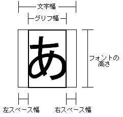

The term definitions shown here are used in documents relating to the G2D font/character (string) display library. These meanings may differ from the general meaning of these terms.
| NITRO font | A font used for character display by G2D. |
| Font resource | The state of a NITRO font before it has been converted to a form that can be used by G2D. Also, a file that stores such a font. |
| Glyph | The shape of a character. |
| Glyph image | A word that refers to a glyph with special emphasis on image aspects. |
| Glyph index | An ID number that is assigned to every glyph in a NITRO font. |
| Character codes | A number that is assigned to every character. |
| Character encoding | A method of converting between a character code and a byte sequence. It is used when expressing a character code as a byte sequence. |
The following information is stored in a NITRO font:
Each character in a NITRO font consists of a glyph image (NNS_G2dFontGetGlyphImage) and three types of width data that combine to form the character width: left space width, glyph width, and right space width (NNS_G2dFontGetCharWidths). (See figure below.) The glyph width is the width of the smallest rectangle that contains the glyph. The right space width and left space width are the widths of the areas to the left and right of the rectangle that require no drawing. The character width is the sum of the left space width, the glyph width, and the right space width. In G2D character drawing (NNS_G2dCharCanvasDrawChar), a glyph image is drawn using the glyph width after shifting the distance of the left space width. You can draw text strings by shifting the drawing position to the right by the character width. The left space width and right space width can be negative values and the character width can be smaller than the glyph width. In this case, the character will be drawn overlapping the characters before and after it.

Glyph heights for NITRO fonts are not stored for each text character. Instead, the font height (NNS_G2dFontGetHeight)—the height sufficient to display all characters in the font—is stored.
In a NITRO font, glyphs are stored as BMP images. Each glyph is stored in a BMP image measuring NNS_G2dFontGetCellWidth by NNS_G2dFontGetCellHeight pixels; this BMP image is called a cell.
The glyph image is stored aligned against the left side of the cell, and its width can be obtained by using NNS_G2dFontGetCharWidths.
In some functions, when a character not inlcuded in the NITRO font is specified, a replacement character is used. This replacement character is called an alternate character and is registered in the NITRO font. NNS_G2dFontGetAlternateGlyphIndex).
Font manipulation functions that take characters as arguments use 16-bit character codes to specify characters. Functions do not use these character codes as meaningful values. Character codes are immediately converted to glyph indices within functions using the conversion table in the NITRO font, and all actual processing is done with glyph indices. Therefore, once a character code conversion table is properly created in the NITRO font, any character set can be used. Conversely, a NITRO font must be prepared for each character set, and if the character set used in a program does not match the NITRO font character set, you will not get the result you want.
The font functions can be divided into the following six large groups.
05/25/2005 Initial version.